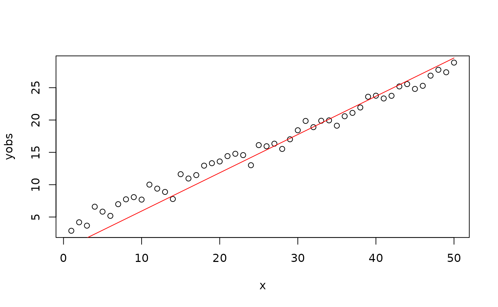

calib_lm.Rmd下文以最简单的一元线性回归模型为例，展示了如何采用优化的方法率定模型参数。 该方法完全可以移植、应用于复杂模型的参数优化（如马斯京根、蒸发模型、水文模型的参数率定）。读者可自行触类旁通。
谢宇轩&孔冬冬
library(hydroTools)
#> The legacy packages maptools, rgdal, and rgeos, underpinning the sp package,
#> which was just loaded, were retired in October 2023.
#> Please refer to R-spatial evolution reports for details, especially
#> https://r-spatial.org/r/2023/05/15/evolution4.html.
#> It may be desirable to make the sf package available;
#> package maintainers should consider adding sf to Suggests:.
#> Please note that 'maptools' will be retired during October 2023,
#> plan transition at your earliest convenience (see
#> https://r-spatial.org/r/2023/05/15/evolution4.html and earlier blogs
#> for guidance);some functionality will be moved to 'sp'.
#> Checking rgeos availability: FALSE
library(ggplot2)
# simulation function
# ' @author [Yuxuan Xie](xieyx@cug.edu.cn)
fun_predict <- function(x, par) {
x * par[1] + x * par[2]
}
#' Goal function
#'
#' Find the parameter corresponding to the minimum value of the objective function
#'
#' @note we need the index, the smaller, the better.
goal <- function(par, x, yobs, ...) {
ysim = fun_predict(x, par) # ysim with the par
hydroTools::GOF(yobs, ysim)$RMSE # one of -NSE, -KGE, RMSE
}
set.seed(1) # Ensure the random numbers generated each time are consistent
n = 50
x = 1:n
par = c(0.5, 2) # real parameter
yobs = par[1]*x + par[2] + rnorm(n, 1) # 实际应用过程中，yobs是已经提供的
fun_predict(x, par) # test above function
#> [1] 2.5 5.0 7.5 10.0 12.5 15.0 17.5 20.0 22.5 25.0 27.5 30.0
#> [13] 32.5 35.0 37.5 40.0 42.5 45.0 47.5 50.0 52.5 55.0 57.5 60.0
#> [25] 62.5 65.0 67.5 70.0 72.5 75.0 77.5 80.0 82.5 85.0 87.5 90.0
#> [37] 92.5 95.0 97.5 100.0 102.5 105.0 107.5 110.0 112.5 115.0 117.5 120.0
#> [49] 122.5 125.0
goal(par, x, yobs)
#> [1] 55.93361
par_u = c(6, 6) # upper boundary of par
par_l = c(-1, -1) # lower boundary of par
par0 = c(1, 1) # initial parameter
# 这里以sceua为例展示如何进行参数优化，其他优化函数可以自行触类旁通
opt = rtop::sceua(goal, par = par0, lower = par_l, upper = par_u,
x = x, yobs = yobs, # other parameters passed to `goal`
maxn = 1e3)
#> 51 best 1.84 function convergence 200 parameter convergence 7610.145
#> 79 best 1.76 function convergence 200 parameter convergence 4530.619
#> 105 best 1.75 function convergence 200 parameter convergence 2690.471
#> 131 best 1.74 function convergence 200 parameter convergence 2931.736
#> 159 best 1.74 function convergence 200 parameter convergence 3057.855
#> 184 best 1.74 function convergence 5.71 parameter convergence 2478.465
#> 209 best 1.74 function convergence 1.09 parameter convergence 2314.297
#> 234 best 1.74 function convergence 0.354 parameter convergence 1532.078
#> 259 best 1.74 function convergence 0.000384 parameter convergence 1725.886
#> 284 best 1.74 function convergence 0.000384 parameter convergence 1725.886
#> 309 best 1.74 function convergence 2.79e-06 parameter convergence 1397.07
#> 335 best 1.74 function convergence 4.28e-08 parameter convergence 976.0489
#> 361 best 1.74 function convergence 4.28e-08 parameter convergence 452.3405
#> 387 best 1.74 function convergence 1.32e-08 parameter convergence 355.4915
#> 414 best 1.74 function convergence 6.81e-11 parameter convergence 309.5118
#> 441 best 1.74 function convergence 1.96e-11 parameter convergence 345.5275
#> 469 best 1.74 function convergence 2.19e-12 parameter convergence 356.8678
#> 501 best 1.74 function convergence 8.92e-13 parameter convergence 238.4948
#> 535 best 1.74 function convergence 7.65e-14 parameter convergence 312.2249
#> 562 best 1.74 function convergence 2.55e-14 parameter convergence 247.6701
#> 595 best 1.74 function convergence 2.55e-14 parameter convergence 253.8331
#> 622 best 1.74 function convergence 0 parameter convergence 253.8331
#> 650 best 1.74 function convergence 0 parameter convergence 296.1607
#> 677 best 1.74 function convergence 0 parameter convergence 220.8968
#> 704 best 1.74 function convergence 0 parameter convergence 196.6364
#> 731 best 1.74 function convergence 0 parameter convergence 196.6364
#> 756 best 1.74 function convergence 0 parameter convergence 196.6364
#> 781 best 1.74 function convergence 0 parameter convergence 196.6364
#> 806 best 1.74 function convergence 0 parameter convergence 196.6364
#> 835 best 1.74 function convergence 0 parameter convergence 196.6364
#> 865 best 1.74 function convergence 0 parameter convergence 196.6364
#> 890 best 1.74 function convergence 0 parameter convergence 200.6591
#> 920 best 1.74 function convergence 0 parameter convergence 196.6364
#> 953 best 1.74 function convergence 0 parameter convergence 196.6364
#> 982 best 1.74 function convergence 0 parameter convergence 196.6364
#> 1008 best 1.74 function convergence 0 parameter convergence 196.6364
par_opt = opt$par # SCEUA生成的最优参数
ysim = fun_predict(x, par_opt)
dat = data.frame(x, yobs, ysim)
xx = seq(min(x), max(x), 0.1) # xsim
yy = fun_predict(xx, par = par_opt)
GOF(dat$yobs, dat$ysim)
#> # A tibble: 1 × 11
#> R pvalue R2 NSE KGE RMSE MAE Bias Bias_perc AI n_sim
#> <dbl> <dbl> <dbl> <dbl> <dbl> <dbl> <dbl> <dbl> <dbl> <dbl> <int>
#> 1 0.994 4.96e-47 0.987 0.942 0.816 1.74 1.45 -0.756 -0.0477 0.988 50
if (require(gg.layers)) {
# remotes::install_github("rpkgs/gg.layers")
suppressWarnings({
p = ggplot(dat, aes(yobs, ysim)) +
geom_point() +
stat_gof(show.line = TRUE)
print(p)
})
# Ipaper::write_fig(p, "Figure1_calib_lm.pdf", 6, 5)
} else {
plot(x, yobs)
lines(xx, yy, col = "red")
}
#> Loading required package: gg.layers
#> Warning in library(package, lib.loc = lib.loc, character.only = TRUE,
#> logical.return = TRUE, : there is no package called 'gg.layers'